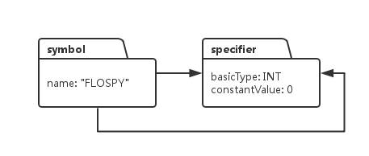
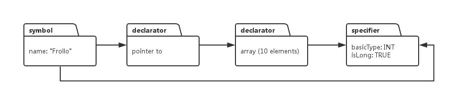
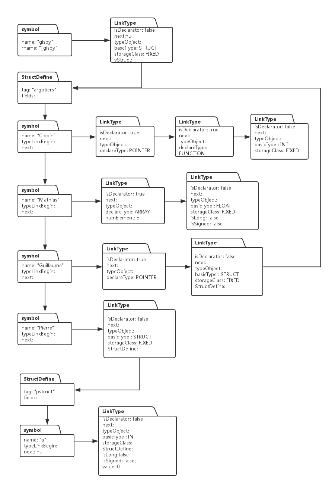

阅读博客的朋友可以到我的网易云课堂中，通过视频的方式查看代码的调试和执行过程：
http://study.163.com/course/courseMain.htm?courseId=1002830012
这一节，我们继续就上一节讨论的内容，继续就符号表和类型系统的构建进行深入的探讨。
基于上一节的基础，我们看看，编译器如何为一个变量构建它在符号表中的记录和类型系统。假设我们的C语言代码中有如下的变量定义：
enum rabbits {
FLOSPY, MOPSEY, PETER
};上面的枚举类型，会被C编译器转换成如下形式的C代码：
const int FLOSPY = 0;
const int MOPSEY = 0;
const int PETER = 0;编译器在解析 “const int FLOSPY = 0” 这条语句后，会在符号表中产生以下数据结构：

由于变量FLOSPY 没有*, 没有[]之类的类型声明，因此它的类型系统只需要说明符，不需要修饰符，因此它的类型列表中就是由一个specifier.它的数据类型是INT, 由于被初始化成一个常量整形，所以constantValue设置为0.大家注意，从Symbol对象引出两个箭头，两个箭头都指向specifier对象。之所以需要两个箭头是因为，类型系统本质上就是一个链表，链表链接的是两种对象，一种是declarator, 一种是specifier, 我们在实现代码的时候，需要把declarator放在链表的前面，specifier放在链表的最末尾。因此从symbol发出的两个箭头，一个指向队列的开头，这样从这个箭头起始就可以逐个访问链表的每个对象，由于declarator放在链表的前面，这样从这个箭头开始，就可以访问一系列的declarator, 但是如果我们想要访问链表最末尾的specifier对象，那就得遍历整个链表，这样效率就太慢了，于是，从symbol对象引出第二个箭头直接指向链表的末尾，也就是specifier对象，这样想要直接访问类型系统链表的specifier，直接从第二个指针读取就可以了，不需要遍历整个链表，例如下面这个例子:
long int (*Frollo)[10];编译器会给上面的变量声明建立如下的符号表记录和类型队列：

大家看到，类型系统队列有三个元素，前两个是declarator, 最后一个是specifier, 从symbol引出的两个箭头，一个指向链表的开始，第二个直接指向链表的末尾，也就是specifier.
这样，我们就需要在代码中，设计一个链表来讲declarator 和 specifier连接起来，这个链表的代码如下：
public class TypeLink {
boolean isDeclarator = true; //true 那么该object 的对象是declarator, false那么object指向的就是specifier
boolean isTypeDef = false; //true，那么当前变量的类型是由typedef 定义的
Object typeObject;
TypeLink next = null;
public TypeLink(boolean isDeclarator, boolean typeDef, Object typeObj) {
this.isDeclarator = isDeclarator;
this.isTypeDef = typeDef;
this.typeObject = typeObj;
}
public Object getTypeObject() {
return typeObject;
}
public TypeLink toNext() {
return next;
}
}
这样我们在Symbol类中，要添加两个成员变量：
public class Symbol {
String name;
String rname;
int level; //变量的层次
boolean implicit; //是否是匿名变量
boolean duplicate; //是否是同名变量
Symbol args; //如果该符号对应的是函数名,那么args指向函数的输入参数符号列表
Symbol next; //指向下一个同层次的变量符号
TypeLink typeLinkBegin;
TypeLink typeLinkEnd;
}在Specifier 类中，最后一个成员变量StructDefine,我还没有解释，这个类型是专门用于处理Struct类型声明的。由于一个结构体里面包含了多种变量声明，所以结构体变量的存在使得类型系统复杂了很多，我们先看看结构体变量类型的代码：
/*
* struct argotiers {
* int (*Clopin)();
* double Mathias[5];
* struct argotiers* Guillaume;
* struct pstruct {int a;} Pierre;
* }
*/
public class StructDefine {
private String tag; //结构体的名称,例如上面的例子中，对应该变量的值为 "argotiers"
private int level; //结构体的间套层次
private Symbol fields; //对应结构体里的各个变量类型
public StructDefine(String tag, int level, Symbol fields) {
this.tag = tag;
this.level = level;
this.fields = fields;
}
public String getTag() {
return tag;
}
public int getLevel() {
return level;
}
public Symbol getFields() {
return fields;
}
}
我们以一个具体的结构体声明例子为例，看看它对应的符号表和类型系统是怎样的：
struct argotiers {
int (*Clopin)();
double Mathias[5];
struct argotiers *Guillaume;
struct pstruct {int a;} Pierre;
} gipsy;它的类型系统如下：

这个系统看起来似乎很复杂，但实际上它是由若干个简单的类型系统结合而成的，搞清楚前面我们描述的类型系统队列，对这个图的理解应该不难，这个图其实也表明，任何复杂的的系统，都是由多个简单的单元相互勾连交叉所形成的。
这两节的代码主要用于解释概念，在实际开发时，我们会根据需要，对当前代码做相应修改，下一节，我们基于前面的变量声明解析过程，看看语句：
long int *x, y;
所声明的两个变量，他们的类型系统和符号表是如何建立的。